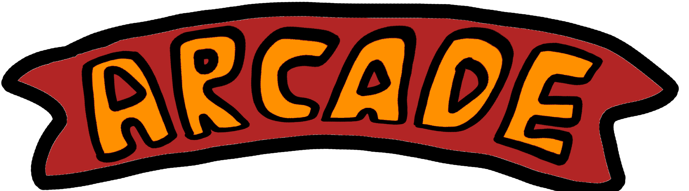

Robot


This was the last model i started so had the most "experience" going into it. I wanted to make a somewhat detail toy robot and had some examples up on my second monitor (hence not video). The overall time for model is the shortest mainly because i took this time to texture it with materials in blender instead of the drawn textures like i did for the other machines.
I came in knowing beveling and so used quite heavily to make the appearance of a toy with not so sharp edges and a plasticy feel. Theres no much to say about this model, other than its Linked not imported into the claw machine blender project so any changes i did to the robot instantly reflected to the claw machine file without re importing which was cool.